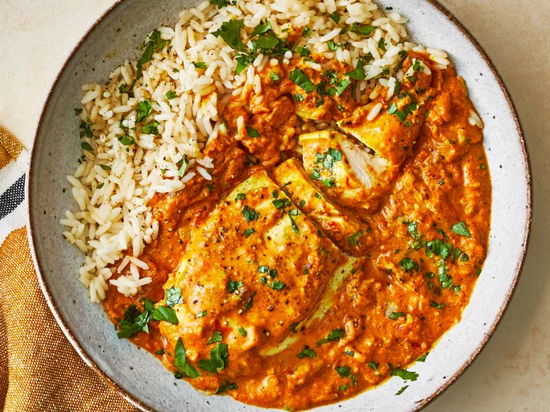

Chicken Curry

This is a really good recipe for spicy Indian chicken curry. It's pretty easy to make and tastes better than takeout!
Ingredients
- 2 pounds skinless, boneless chicken breast halves
- 2 teaspoon salt
- ½ cup cooking oil
- 1 ½ cup chopped onions
- 1 tablespoon minced garlic
- 1 ½ teaspoon minced fresh ginger root
- 1 teaspoon curry poowder
- 1 teaspoon ground cumin
- 1 teaspoon ground turmeric
- 1 teaspoon ground coriander
- 1 teaspoon cayenne pepper
- 1 tablespoon water
- 1 cup plain yogurt
- 1 tablespoon chopped fresh cilantro
- 1 teaspoon salt
- 1 teaspoon garam masala
- 1 teaspoon fresh lemon juice
- 1 tablespoon chopped fresh cilantro
Directions
Steps
- Gather all ingredients.
- Sprinkle the chicken breasts with 2 teaspoons salt. Heat oil in a large skillet over high heat; partially cook the chicken in the hot oil in batches until completely browned on all sides. Transfer browned chicken breasts to a plate and set aside.
- Reduce the heat to medium and add onion, garlic, and ginger to the oil remaining in the skillet. Cook and stir until onion turns soft and translucent, 5 to 8 minutes. Stir curry powder, cumin, turmeric, coriander, cayenne, and 1 tablespoon of water into the onion mixture; allow to heat together for about 1 minute while stirring.
- Add tomatoes, yogurt, 1 tablespoon chopped cilantro, and 1 teaspoon salt to the mixture; stir to combine.
- Return chicken breast to the skillet along with any juices on the plate. Pour in 1/2 cup water and bring to a boil, turning the chicken to coat with the sauce. Sprinkle garam masala and 1 tablespoon cilantro over the chicken.
- Cover the skillet and simmer until chicken breasts are no longer pink in the center and the juices run clear, about 20 minutes. An instant-read thermometer inserted into the center should read at least 165 degrees F (74 degrees C). Drizzle with lemon juice to serve.
- Drizzle with lemon juice to serve.
Home